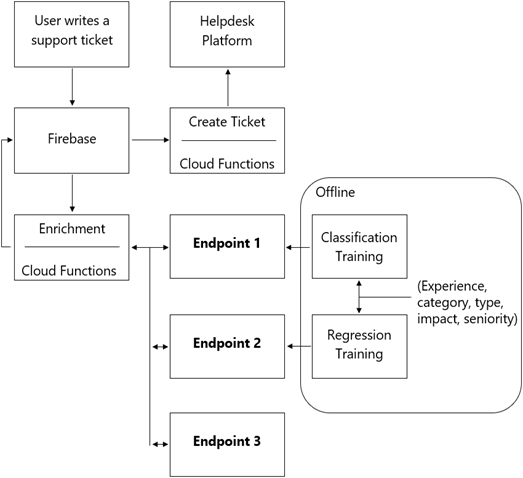
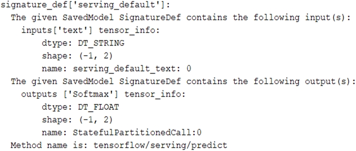
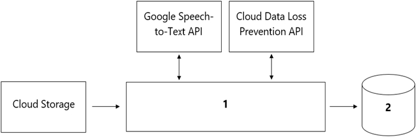
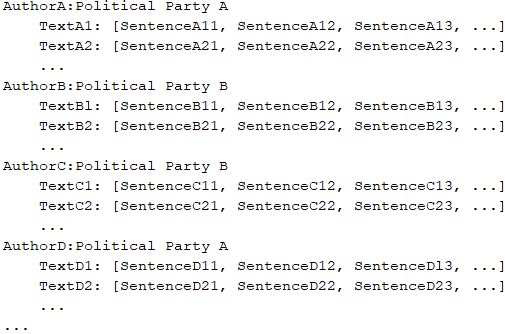
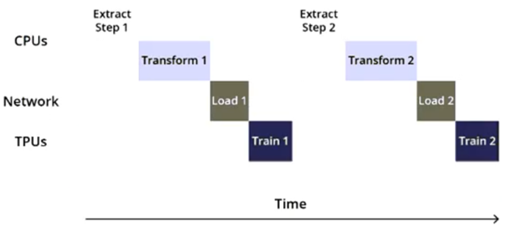
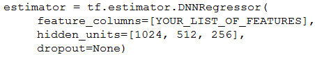
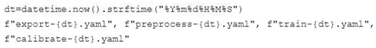
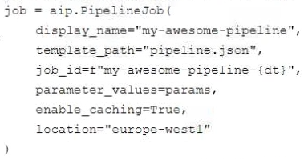
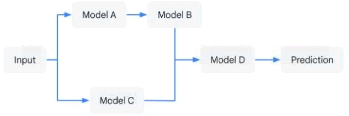

Question 1
(Single answer)
You are building an ML model to detect anomalies in real-time sensor data. You will use Pub/Sub to handle incoming requests. You want to store the results for analytics and visualization. How should you configure the pipeline?
Question 2
(Single answer)
Your organization wants to make its internal shuttle service route more efficient. The shuttles currently stop at all pick-up points across the city every 30 minutes between 7 am and 10 am. The development team has already built an application on Google Kubernetes Engine that requires users to confirm their presence and shuttle station one day in advance. What approach should you take?
Question 3
(Single answer)
You were asked to investigate failures of a production line component based on sensor readings. After receiving the dataset, you discover that less than of the readings are positive examples representing failure incidents. You have tried to train several classification models, but none of them converge. How should you resolve the class imbalance problem?
Question 4
(Single answer)
You want to rebuild your ML pipeline for structured data on Google Cloud. You are using PySpark to conduct data transformations at scale, but your pipelines are taking over 12 hours to run. To speed up development and pipeline run time, you want to use a serverless tool and SQL syntax. You have already moved your raw data into Cloud Storage. How should you build the pipeline on Google Cloud while meeting the speed and processing requirements?
Question 5
(Single answer)
You manage a team of data scientists who use a cloud-based backend system to submit training jobs. This system has become very difficult to administer, and you want to use a managed service instead. The data scientists you work with use many different frameworks, including Keras, PyTorch, theano, Scikit-learn, and custom libraries. What should you do?
Question 6
(Single answer)
You work for an online retail company that is creating a visual search engine. You have set up an end-to-end ML pipeline on Google Cloud to classify whether an image contains your company's product. Expecting the release of new products in the near future, you configured a retraining functionality in the pipeline so that new data can be fed into your ML models. You also want to use AI Platform's continuous evaluation service to ensure that the models have high accuracy on your test dataset. What should you do?
Question 7
(Single answer)
You need to build classification workflows over several structured datasets currently stored in BigQuery. Because you will be performing the classification several times, you want to complete the following steps without writing code: exploratory data analysis, feature selection, model building, training, and hyperparameter tuning and serving. What should you do?
Question 8
(Single answer)
You work for a public transportation company and need to build a model to estimate delay times for multiple transportation routes. Predictions are served directly to users in an app in real time. Because different seasons and population increases impact the data relevance, you will retrain the model every month. You want to follow Google-recommended best practices. How should
you configure the end-to-end architecture of the predictive model?
Question 9
(Single answer)
You are developing ML models with AI Platform for image segmentation on CT scans. You frequently update your model architectures based on the newest available research papers, and have to rerun training on the same dataset to benchmark their performance. You want to minimize computation costs and manual intervention while having version control for your code. What should you do?
Question 10
(Single answer)
Your team needs to build a model that predicts whether images contain a driver's license, passport, or credit card. The data engineering team already built the pipeline and generated a dataset composed of 10,000 images with driver's licenses, 1,000 images with passports, and 1,000 images with credit cards. You now have to train a model with the following label map: [`˜drivers_license', `˜passport', `˜credit_card']. Which loss function should you use?
Question 11
(Single answer)
You are designing an ML recommendation model for shoppers on your company's ecommerce website. You will use Recommendations AI to build, test, and deploy your system. How should you develop recommendations that increase revenue while following best practices?
Question 12
(Single answer)
You are designing an architecture with a serverless ML system to enrich customer support tickets with informative metadata before they are routed to a support agent. You need a set of models to predict ticket priority, predict ticket resolution time, and perform sentiment analysis to help agents make strategic decisions when they process support requests. Tickets are not expected to have any domain-specific terms or jargon. The proposed architecture has the following flow:

Which endpoints should the Enrichment Cloud Functions call?
Question 13
(Single answer)
You have trained a deep neural network model on Google Cloud. The model has low loss on the training data, but is performing worse on the validation data. You want the model to be resilient to overfitting. Which strategy should you use when retraining the model?
Question 14
(Single answer)
You built and manage a production system that is responsible for predicting sales numbers. Model accuracy is crucial, because the production model is required to keep up with market changes. Since being deployed to production, the model hasn't changed; however the accuracy of the model has steadily deteriorated. What issue is most likely causing the steady decline in model accuracy?
Question 15
(Single answer)
You have been asked to develop an input pipeline for an ML training model that processes images from disparate sources at a low latency. You discover that your input data does not fit in memory. How should you create a dataset following Google- recommended best practices?
Question 16
(Single answer)
You are an ML engineer at a large grocery retailer with stores in multiple regions. You have been asked to create an inventory prediction model. Your model's features include region, location, historical demand, and seasonal popularity. You want the algorithm to learn from new inventory data on a daily basis. Which algorithms should you use to build the model?
Question 17
(Single answer)
You are building a real-time prediction engine that streams files which may contain Personally Identifiable Information (PII) to Google Cloud. You want to use the Cloud Data Loss Prevention (DLP) API to scan the files. How should you ensure that the PII is not accessible by unauthorized individuals?
Question 18
(Single answer)
You work for a large hotel chain and have been asked to assist the marketing team in gathering predictions for a targeted marketing strategy. You need to make predictions about user lifetime value (LTV) over the next 20 days so that marketing can be adjusted accordingly. The customer dataset is in BigQuery, and you are preparing the tabular data for training with AutoML Tables. This data has a time signal that is spread across multiple columns. How should you ensure that AutoML fits the best model to your data?
Question 19
(Single answer)
You have written unit tests for a Kubeflow Pipeline that require custom libraries. You want to automate the execution of unit tests with each new push to your development branch in Cloud Source Repositories. What should you do?
Question 20
(Single answer)
You are training an LSTM-based model on AI Platform to summarize text using the following job submission script: gcloud ai- platform jobs submit training $JOB_NAME \ --package-path $TRAINER_PACKAGE_PATH \ --module-name $MAIN_TRAINER_MODULE \ --job-dir $JOB_DIR \ --region $REGION \ --scale-tier basic \ -- \ --epochs 20 \ --batch_size=32 \ --learning_rate=0.001 \ You want to ensure that training time is minimized without significantly compromising the accuracy of your model. What should you do?
Question 21
(Single answer)
You have deployed multiple versions of an image classification model on AI Platform. You want to monitor the performance of the model versions over time. How should you perform this comparison?
Question 22
(Single answer)
You trained a text classification model. You have the following SignatureDefs:

You started a TensorFlow-serving component server and tried to send an HTTP request to get a prediction using: headers = {"content-type": "application/json"} json_response = requests.post('http: //localhost:8501/v1/models/text_model:predict', data=data, headers=headers) What is the correct way to write the predict request?
Question 23
(Single answer)
Your organization's call center has asked you to develop a model that analyzes customer sentiments in each call. The call center receives over one million calls daily, and data is stored in Cloud Storage. The data collected must not leave the region in which the call originated, and no Personally Identifiable Information (PII) can be stored or analyzed. The data science team has a third-party tool for visualization and access which requires a SQL ANSI-2011 compliant interface. You need to select components for data processing and for analytics. How should the data pipeline be designed?

Question 24
(Single answer)
You are an ML engineer at a global shoe store. You manage the ML models for the company's website. You are asked to build a model that will recommend new products to the user based on their purchase behavior and similarity with other users. What should you do?
Question 25
(Single answer)
You work for a social media company. You need to detect whether posted images contain cars. Each training example is a member of exactly one class. You have trained an object detection neural network and deployed the model version to AI Platform Prediction for evaluation. Before deployment, you created an evaluation job and attached it to the AI Platform Prediction model version. You notice that the precision is lower than your business requirements allow. How should you adjust the model's final layer softmax threshold to increase precision?
Question 26
(Single answer)
You are responsible for building a unified analytics environment across a variety of on-premises data marts. Your company is experiencing data quality and security challenges when integrating data across the servers, caused by the use of a wide range of disconnected tools and temporary solutions. You need a fully managed, cloud-native data integration service that will lower the total cost of work and reduce repetitive work. Some members on your team prefer a codeless interface for building Extract, Transform, Load (ETL) process. Which service should you use?
Question 27
(Single answer)
You are an ML engineer at a regulated insurance company. You are asked to develop an insurance approval model that accepts or rejects insurance applications from potential customers. What factors should you consider before building the model?
Question 28
(Multiple answers)
You are training a Resnet model on AI Platform using TPUs to visually categorize types of defects in automobile engines. You capture the training profile using the Cloud TPU profiler plugin and observe that it is highly input-bound. You want to reduce the bottleneck and speed up your model training process. Which modifications should you make to the tf.data dataset? (Choose two.)
Question 29
(Single answer)
You have trained a model on a dataset that required computationally expensive preprocessing operations. You need to execute the same preprocessing at prediction time. You deployed the model on AI Platform for high-throughput online prediction. Which architecture should you use?
Question 30
(Single answer)
Your team trained and tested a DNN regression model with good results. Six months after deployment, the model is performing poorly due to a change in the distribution of the input data. How should you address the input differences in production?
Question 31
(Single answer)
You need to train a computer vision model that predicts the type of government ID present in a given image using a GPU- powered virtual machine on Compute Engine. You use the following parameters: ✑ Optimizer: SGD ✑ Image shape = 224ֳ—224 ✑ Batch size = 64 ✑ Epochs = 10 ✑ Verbose =2 During training you encounter the following error: ResourceExhaustedError: Out Of Memory (OOM) when allocating tensor. What should you do?
Question 32
(Single answer)
You developed an ML model with AI Platform, and you want to move it to production. You serve a few thousand queries per second and are experiencing latency issues. Incoming requests are served by a load balancer that distributes them across multiple Kubeflow CPU-only pods running on Google Kubernetes Engine (GKE). Your goal is to improve the serving latency without changing the underlying infrastructure. What should you do?
Question 33
(Single answer)
You have a demand forecasting pipeline in production that uses Dataflow to preprocess raw data prior to model training and prediction. During preprocessing, you employ Z-score normalization on data stored in BigQuery and write it back to BigQuery. New training data is added every week. You want to make the process more efficient by minimizing computation time and manual intervention. What should you do?
Question 34
(Single answer)
You need to design a customized deep neural network in Keras that will predict customer purchases based on their purchase history. You want to explore model performance using multiple model architectures, store training data, and be able to compare the evaluation metrics in the same dashboard. What should you do?
Question 35
(Single answer)
You are developing a Kubeflow pipeline on Google Kubernetes Engine. The first step in the pipeline is to issue a query against BigQuery. You plan to use the results of that query as the input to the next step in your pipeline. You want to achieve this in the easiest way possible. What should you do?
Question 36
(Single answer)
You are building a model to predict daily temperatures. You split the data randomly and then transformed the training and test datasets. Temperature data for model training is uploaded hourly. During testing, your model performed with accuracy; however, after deploying to production, the model's accuracy dropped to. How can you make your production model more accurate?
Question 37
(Single answer)
You are developing models to classify customer support emails. You created models with TensorFlow Estimators using small datasets on your on-premises system, but you now need to train the models using large datasets to ensure high performance. You will port your models to Google Cloud and want to minimize code refactoring and infrastructure overhead for easier migration from on-prem to cloud. What should you do?
Question 38
(Single answer)
You have trained a text classification model in TensorFlow using AI Platform. You want to use the trained model for batch predictions on text data stored in BigQuery while minimizing computational overhead. What should you do?
Question 39
(Single answer)
You work with a data engineering team that has developed a pipeline to clean your dataset and save it in a Cloud Storage bucket. You have created an ML model and want to use the data to refresh your model as soon as new data is available. As part of your CI/CD workflow, you want to automatically run a Kubeflow Pipelines training job on Google Kubernetes Engine (GKE). How should you architect this workflow?
Question 40
(Multiple answers)
You have a functioning end-to-end ML pipeline that involves tuning the hyperparameters of your ML model using AI Platform, and then using the best-tuned parameters for training. Hypertuning is taking longer than expected and is delaying the downstream processes. You want to speed up the tuning job without significantly compromising its effectiveness. Which actions should you take? (Choose two.)
Question 41
(Single answer)
Your team is building an application for a global bank that will be used by millions of customers. You built a forecasting model that predicts customers' account balances 3 days in the future. Your team will use the results in a new feature that will notify users when their account balance is likely to drop below $25. How should you serve your predictions?
Question 42
(Single answer)
You work for an advertising company and want to understand the effectiveness of your company's latest advertising campaign. You have streamed 500 MB of campaign data into BigQuery. You want to query the table, and then manipulate the results of that query with a pandas dataframe in an AI Platform notebook. What should you do?
Question 43
(Single answer)
You are an ML engineer at a global car manufacture. You need to build an ML model to predict car sales in different cities around the world. Which features or feature crosses should you use to train city-specific relationships between car type and number of sales?
Question 44
(Single answer)
You work for a large technology company that wants to modernize their contact center. You have been asked to develop a solution to classify incoming calls by product so that requests can be more quickly routed to the correct support team. You have already transcribed the calls using the Speech-to-Text API. You want to minimize data preprocessing and development time. How should you build the model?
Question 45
(Single answer)
You are training a TensorFlow model on a structured dataset with 100 billion records stored in several CSV files. You need to improve the input/output execution performance. What should you do?
Question 46
(Single answer)
As the lead ML Engineer for your company, you are responsible for building ML models to digitize scanned customer forms. You have developed a TensorFlow model that converts the scanned images into text and stores them in Cloud Storage. You need to use your ML model on the aggregated data collected at the end of each day with minimal manual intervention. What should you do?
Question 47
(Single answer)
You recently joined an enterprise-scale company that has thousands of datasets. You know that there are accurate descriptions for each table in BigQuery, and you are searching for the proper BigQuery table to use for a model you are building on AI Platform. How should you find the data that you need?
Question 48
(Single answer)
You started working on a classification problem with time series data and achieved an area under the receiver operating characteristic curve (AUC ROC) value of for training data after just a few experiments. You haven't explored using any sophisticated algorithms or spent any time on hyperparameter tuning. What should your next step be to identify and fix the problem?
Question 49
(Single answer)
You work for an online travel agency that also sells advertising placements on its website to other companies. You have been asked to predict the most relevant web banner that a user should see next. Security is important to your company. The model latency requirements are 300ms@p99, the inventory is thousands of web banners, and your exploratory analysis has shown that
navigation context is a good predictor. You want to Implement the simplest solution. How should you configure the prediction pipeline?
Question 50
(Single answer)
Your team is building a convolutional neural network (CNN)-based architecture from scratch. The preliminary experiments running on your on-premises CPU-only infrastructure were encouraging, but have slow convergence. You have been asked to speed up model training to reduce time-to-market. You want to experiment with virtual machines (VMs) on Google Cloud to leverage more powerful hardware. Your code does not include any manual device placement and has not been wrapped in Estimator model-level abstraction. Which environment should you train your model on?
Question 51
(Single answer)
You work on a growing team of more than 50 data scientists who all use AI Platform. You are designing a strategy to organize your jobs, models, and versions in a clean and scalable way. Which strategy should you choose?
Question 52
(Single answer)
You are training a deep learning model for semantic image segmentation with reduced training time. While using a Deep Learning VM Image, you receive the following error: The resource 'projects/deeplearning-platforn/zones/europe-west4- c/acceleratorTypes/nvidia-tesla-k80' was not found. What should you do?
Question 53
(Single answer)
Your team is working on an NLP research project to predict political affiliation of authors based on articles they have written. You have a large training dataset that is structured like this:

You followed the standard-- data distribution across the training, testing, and evaluation subsets. How should you distribute the training examples across the train-test-eval subsets while maintaining the 80-10-10 proportion?
Question 54
(Single answer)
Your team has been tasked with creating an ML solution in Google Cloud to classify support requests for one of your platforms. You analyzed the requirements and decided to use TensorFlow to build the classifier so that you have full control of the model's code, serving, and deployment. You will use Kubeflow pipelines for the ML platform. To save time, you want to build on existing resources and use managed services instead of building a completely new model. How should you build the classifier?
Question 55
(Single answer)
You recently joined a machine learning team that will soon release a new project. As a lead on the project, you are asked to determine the production readiness of the ML components. The team has already tested features and data, model development, and infrastructure. Which additional readiness check should you recommend to the team?
Question 56
(Single answer)
You work for a credit card company and have been asked to create a custom fraud detection model based on historical data using AutoML Tables. You need to prioritize detection of fraudulent transactions while minimizing false positives. Which optimization objective should you use when training the model?
Question 57
(Single answer)
Your company manages a video sharing website where users can watch and upload videos. You need to create an ML model to predict which newly uploaded videos will be the most popular so that those videos can be prioritized on your company's website. Which result should you use to determine whether the model is successful?
Question 58
(Single answer)
You are working on a Neural Network-based project. The dataset provided to you has columns with different ranges. While preparing the data for model training, you discover that gradient optimization is having difficulty moving weights to a good solution. What should you do?
Question 59
(Single answer)
Your data science team needs to rapidly experiment with various features, model architectures, and hyperparameters. They need to track the accuracy metrics for various experiments and use an API to query the metrics over time. What should they use to track and report their experiments while minimizing manual effort?
Question 60
(Single answer)
You work for a bank and are building a random forest model for fraud detection. You have a dataset that includes transactions, of which are identified as fraudulent. Which data transformation strategy would likely improve the performance of your classifier?
Question 61
(Single answer)
You are using transfer learning to train an image classifier based on a pre-trained EfficientNet model. Your training dataset has 20,000 images. You plan to retrain the model once per day. You need to minimize the cost of infrastructure. What platform components and configuration environment should you use?
Question 62
(Single answer)
While conducting an exploratory analysis of a dataset, you discover that categorical feature A has substantial predictive power, but it is sometimes missing. What should you do?
Question 63
(Single answer)
You work for a large retailer and have been asked to segment your customers by their purchasing habits. The purchase history of all customers has been uploaded to BigQuery. You suspect that there may be several distinct customer segments, however you are unsure of how many, and you don’t yet understand the commonalities in their behavior. You want to find the most efficient solution. What should you do?
Question 64
(Single answer)
You recently designed and built a custom neural network that uses critical dependencies specific to your organization’s framework. You need to train the model using a managed training service on Google Cloud. However, the ML framework and related dependencies are not supported by AI Platform Training. Also, both your model and your data are too large to fit in memory on a single machine. Your ML framework of choice uses the scheduler, workers, and servers distribution structure. What should you do?
Question 65
(Single answer)
While monitoring your model training’s GPU utilization, you discover that you have a native synchronous implementation. The training data is split into multiple files. You want to reduce the execution time of your input pipeline. What should you do?
Question 66
(Single answer)
Your data science team is training a PyTorch model for image classification based on a pre-trained RestNet model. You need to perform hyperparameter tuning to optimize for several parameters. What should you do?
Question 67
(Single answer)
You have a large corpus of written support cases that can be classified into 3 separate categories: Technical Support, Billing Support, or Other Issues. You need to quickly build, test, and deploy a service that will automatically classify future written requests into one of the categories. How should you configure the pipeline?
Question 68
(Single answer)
You need to quickly build and train a model to predict the sentiment of customer reviews with custom categories without writing code. You do not have enough data to train a model from scratch. The resulting model should have high predictive performance. Which service should you use?
Question 69
(Single answer)
You need to build an ML model for a social media application to predict whether a user’s submitted profile photo meets the requirements. The application will inform the user if the picture meets the requirements. How should you build a model to ensure that the application does not falsely accept a non-compliant picture?
Question 70
(Single answer)
You lead a data science team at a large international corporation. Most of the models your team trains are large-scale models using high-level TensorFlow APIs on AI Platform with GPUs. Your team usually takes a few weeks or months to iterate on a new version of a model. You were recently asked to review your team’s spending. How should you reduce your Google Cloud compute costs without impacting the model’s performance?
Question 71
(Single answer)
You need to train a regression model based on a dataset containing 50,000 records that is stored in BigQuery. The data includes a total of 20 categorical and numerical features with a target variable that can include negative values. You need to minimize effort and training time while maximizing model performance. What approach should you take to train this regression model?
Question 72
(Single answer)
You are building a linear model with over 100 input features, all with values between –1 and 1. You suspect that many features are non-informative. You want to remove the non-informative features from your model while keeping the informative ones in their original form. Which technique should you use?
Question 73
(Single answer)
You work for a global footwear retailer and need to predict when an item will be out of stock based on historical inventory data Customer behavior is highly dynamic since footwear demand is influenced by many different factors. You want to serve models that are trained on all available data, but track your performance on specific subsets of data before pushing to production. What is the most streamlined and reliable way to perform this validation?
Question 74
(Single answer)
You have deployed a model on Vertex AI for real-time inference. During an online prediction request, you get an “Out of Memory” error. What should you do?
Question 75
(Single answer)
You work at a subscription-based company. You have trained an ensemble of trees and neural networks to predict customer churn, which is the likelihood that customers will not renew their yearly subscription. The average prediction is a churn rate, but for a particular customer the model predicts that they are likely to churn. The customer has a product usage history of, is located in New York City, and became a customer in 1997. You need to explain the difference between the actual prediction, a churn rate, and the average prediction. You want to use Vertex Explainable AI. What should you do?
Question 76
(Single answer)
You are working on a classification problem with time series data. After conducting just a few experiments using random cross- validation, you achieved an Area Under the Receiver Operating Characteristic Curve (AUC ROC) value of on the training data. You haven’t explored using any sophisticated algorithms or spent any time on hyperparameter tuning. What should your next step be to identify and fix the problem?
Question 77
(Single answer)
You need to execute a batch prediction on 100 million records in a BigQuery table with a custom TensorFlow DNN regressor model, and then store the predicted results in a BigQuery table. You want to minimize the effort required to build this inference pipeline. What should you do?
Question 78
(Single answer)
You are creating a deep neural network classification model using a dataset with categorical input values. Certain columns have a cardinality greater than 10,000 unique values. How should you encode these categorical values as input into the model?
Question 79
(Single answer)
You need to train a natural language model to perform text classification on product descriptions that contain millions of examples and 100,000 unique words. You want to preprocess the words individually so that they can be fed into a recurrent neural network. What should you do?
Question 80
(Single answer)
You work for an online travel agency that also sells advertising placements on its website to other companies. You have been asked to predict the most relevant web banner that a user should see next. Security is important to your company. The model latency requirements are 300ms@p99, the inventory is thousands of web banners, and your exploratory analysis has shown that navigation context is a good predictor. You want to Implement the simplest solution. How should you configure the prediction pipeline?
Question 81
(Single answer)
Your data science team has requested a system that supports scheduled model retraining, Docker containers, and a service that supports autoscaling and monitoring for online prediction requests. Which platform components should you choose for this system?
Question 82
(Single answer)
You are profiling the performance of your TensorFlow model training time and notice a performance issue caused by inefficiencies in the input data pipeline for a single 5 terabyte CSV file dataset on Cloud Storage. You need to optimize the input pipeline performance. Which action should you try first to increase the efficiency of your pipeline?
Question 83
(Single answer)
You need to design an architecture that serves asynchronous predictions to determine whether a particular mission-critical machine part will fail. Your system collects data from multiple sensors from the machine. You want to build a model that will predict a failure in the next N minutes, given the average of each sensor’s data from the past 12 hours. How should you design the architecture?
Question 84
(Single answer)
Your company manages an application that aggregates news articles from many different online sources and sends them to users. You need to build a recommendation model that will suggest articles to readers that are similar to the articles they are currently reading. Which approach should you use?
Question 85
(Single answer)
You work for a large social network service provider whose users post articles and discuss news. Millions of comments are posted online each day, and more than 200 human moderators constantly review comments and flag those that are inappropriate. Your team is building an ML model to help human moderators check content on the platform. The model scores each comment and flags suspicious comments to be reviewed by a human. Which metric(s) should you use to monitor the model’s performance?
Question 86
(Single answer)
You are a lead ML engineer at a retail company. You want to track and manage ML metadata in a centralized way so that your team can have reproducible experiments by generating artifacts. Which management solution should you recommend to your team?
Question 87
(Single answer)
You have been given a dataset with sales predictions based on your company’s marketing activities. The data is structured and stored in BigQuery, and has been carefully managed by a team of data analysts. You need to prepare a report providing insights into the predictive capabilities of the data. You were asked to run several ML models with different levels of sophistication, including simple models and multilayered neural networks. You only have a few hours to gather the results of your experiments. Which Google Cloud tools should you use to complete this task in the most efficient and self-serviced way?
Question 88
(Single answer)
You are an ML engineer at a bank. You have developed a binary classification model using AutoML Tables to predict whether a customer will make loan payments on time. The output is used to approve or reject loan requests. One customer’s loan request has been rejected by your model, and the bank’s risks department is asking you to provide the reasons that contributed to the model’s decision. What should you do?
Question 89
(Single answer)
You work for a magazine distributor and need to build a model that predicts which customers will renew their subscriptions for the upcoming year. Using your company’s historical data as your training set, you created a TensorFlow model and deployed it to AI Platform. You need to determine which customer attribute has the most predictive power for each prediction served by the model. What should you do?
Question 90
(Single answer)
You are working on a binary classification ML algorithm that detects whether an image of a classified scanned document contains a company’s logo. In the dataset, of examples don’t have the logo, so the dataset is very skewed. Which metrics would give you the most confidence in your model?
Question 91
(Single answer)
You work on the data science team for a multinational beverage company. You need to develop an ML model to predict the company’s profitability for a new line of naturally flavored bottled waters in different locations. You are provided with historical data that includes product types, product sales volumes, expenses, and profits for all regions. What should you use as the input and output for your model?
C Other
Question 92
(Single answer)
You work as an ML engineer at a social media company, and you are developing a visual filter for users’ profile photos. This requires you to train an ML model to detect bounding boxes around human faces. You want to use this filter in your company’s iOS-based mobile phone application. You want to minimize code development and want the model to be optimized for inference on mobile phones. What should you do?
Question 93
(Single answer)
You have been asked to build a model using a dataset that is stored in a medium-sized (~10 GB) BigQuery table. You need to quickly determine whether this data is suitable for model development. You want to create a one-time report that includes both informative visualizations of data distributions and more sophisticated statistical analyses to share with other ML engineers on your team. You require maximum flexibility to create your report. What should you do?
A B Other
Question 94
(Single answer)
You work on an operations team at an international company that manages a large fleet of on-premises servers located in few data centers around the world. Your team collects monitoring data from the servers, including CPU/memory consumption. When an incident occurs on a server, your team is responsible for fixing it. Incident data has not been properly labeled yet. Your management team wants you to build a predictive maintenance solution that uses monitoring data from the VMs to detect potential failures and then alerts the service desk team. What should you do first?
Question 95
(Single answer)
You are developing an ML model that uses sliced frames from video feed and creates bounding boxes around specific objects. You want to automate the following steps in your training pipeline: ingestion and preprocessing of data in Cloud Storage, followed by training and hyperparameter tuning of the object model using Vertex AI jobs, and finally deploying the model to an endpoint. You want to orchestrate the entire pipeline with minimal cluster management. What approach should you use?
Question 96
(Single answer)
You are training an object detection machine learning model on a dataset that consists of three million X-ray images, each roughly 2 GB in size. You are using Vertex AI Training to run a custom training application on a Compute Engine instance with 32-cores, 128 GB of RAM, and 1 NVIDIA P100 GPU. You notice that model training is taking a very long time. You want to decrease training time without sacrificing model performance. What should you do?
B D C 2
Question 97
(Single answer)
You are a data scientist at an industrial equipment manufacturing company. You are developing a regression model to estimate the power consumption in the company’s manufacturing plants based on sensor data collected from all of the plants. The sensors collect tens of millions of records every day. You need to schedule daily training runs for your model that use all the data collected up to the current date. You want your model to scale smoothly and require minimal development work. What should you do?
Question 98
(Single answer)
You built a custom ML model using scikit-learn. Training time is taking longer than expected. You decide to migrate your model to Vertex AI Training, and you want to improve the model’s training time. What should you try out first?
Question 99
(Single answer)
You are an ML engineer at a travel company. You have been researching customers’ travel behavior for many years, and you have deployed models that predict customers’ vacation patterns. You have observed that customers’ vacation destinations vary based on seasonality and holidays; however, these seasonal variations are similar across years. You want to quickly and easily store and compare the model versions and performance statistics across years. What should you do?
Question 100
(Single answer)
You are an ML engineer at a manufacturing company. You need to build a model that identifies defects in products based on images of the product taken at the end of the assembly line. You want your model to preprocess the images with lower computation to quickly extract features of defects in products. Which approach should you use to build the model?
Question 101
(Single answer)
You are developing an ML model intended to classify whether X-ray images indicate bone fracture risk. You have trained a ResNet architecture on Vertex AI using a TPU as an accelerator, however you are unsatisfied with the training time and memory usage. You want to quickly iterate your training code but make minimal changes to the code. You also want to minimize impact on the model’s accuracy. What should you do?
Question 102
(Single answer)
You have successfully deployed to production a large and complex TensorFlow model trained on tabular data. You want to predict the lifetime value (LTV) field for each subscription stored in the BigQuery table named subscription. subscriptionPurchase in the project named my-fortune500-company-project.
You have organized all your training code, from preprocessing data from the BigQuery table up to deploying the validated model to the Vertex AI endpoint, into a TensorFlow Extended (TFX) pipeline. You want to prevent prediction drift, i.e., a situation when a feature data distribution in production changes significantly over time. What should you do?
Question 103
(Single answer)
You recently developed a deep learning model using Keras, and now you are experimenting with different training strategies. First, you trained the model using a single GPU, but the training process was too slow. Next, you distributed the training across 4 GPUs using tf.distribute.MirroredStrategy (with no other changes), but you did not observe a decrease in training time. What should you do?
Question 104
(Single answer)
You work for a gaming company that has millions of customers around the world. All games offer a chat feature that allows players to communicate with each other in real time. Messages can be typed in more than 20 languages and are translated in real time using the Cloud Translation API. You have been asked to build an ML system to moderate the chat in real time while assuring that the performance is uniform across the various languages and without changing the serving infrastructure.
You trained your first model using an in-house word2vec model for embedding the chat messages translated by the Cloud Translation API. However, the model has significant differences in performance across the different languages. How should you improve it?
Question 105
(Single answer)
You work for a gaming company that develops massively multiplayer online (MMO) games. You built a TensorFlow model that predicts whether players will make in-app purchases of more than $10 in the next two weeks. The model’s predictions will be used to adapt each user’s game experience. User data is stored in BigQuery. How should you serve your model while optimizing cost, user experience, and ease of management?
Question 106
(Single answer)
You are building a linear regression model on BigQuery ML to predict a customer’s likelihood of purchasing your company’s products. Your model uses a city name variable as a key predictive component. In order to train and serve the model, your data must be organized in columns. You want to prepare your data using the least amount of coding while maintaining the predictable variables. What should you do?
Question 107
(Single answer)
You are an ML engineer at a bank that has a mobile application. Management has asked you to build an ML-based biometric authentication for the app that verifies a customer’s identity based on their fingerprint. Fingerprints are considered highly sensitive personal information and cannot be downloaded and stored into the bank databases. Which learning strategy should you recommend to train and deploy this ML mode?
Question 108
(Single answer)
You are experimenting with a built-in distributed XGBoost model in Vertex AI Workbench user-managed notebooks. You use BigQuery to split your data into training and validation sets using the following queries:
CREATE OR REPLACE TABLE ‘myproject.mydataset.training‘ AS (SELECT * FROM ‘myproject.mydataset.mytable‘ WHERE RAND() <= 0.8);
CREATE OR REPLACE TABLE ‘myproject.mydataset.validation‘ AS (SELECT * FROM ‘myproject.mydataset.mytable‘ WHERE RAND() <= 0.2);
After training the model, you achieve an area under the receiver operating characteristic curve (AUC ROC) value of 0.8, but after deploying the model to production, you notice that your model performance has dropped to an AUC ROC value of 0.65. What problem is most likely occurring?
Question 109
(Single answer)
During batch training of a neural network, you notice that there is an oscillation in the loss. How should you adjust your model to ensure that it converges?
Question 110
(Single answer)
You work for a toy manufacturer that has been experiencing a large increase in demand. You need to build an ML model to reduce the amount of time spent by quality control inspectors checking for product defects. Faster defect detection is a priority. The factory does not have reliable Wi-Fi. Your company wants to implement the new ML model as soon as possible. Which model should you use?
Question 111
(Single answer)
You need to build classification workflows over several structured datasets currently stored in BigQuery. Because you will be performing the classification several times, you want to complete the following steps without writing code: exploratory data analysis, feature selection, model building, training, and hyperparameter tuning and serving. What should you do?
Question 112
(Single answer)
You are an ML engineer in the contact center of a large enterprise. You need to build a sentiment analysis tool that predicts customer sentiment from recorded phone conversations. You need to identify the best approach to building a model while ensuring that the gender, age, and cultural differences of the customers who called the contact center do not impact any stage of the model development pipeline and results. What should you do?
Question 113
(Single answer)
You need to analyze user activity data from your company’s mobile applications. Your team will use BigQuery for data analysis, transformation, and experimentation with ML algorithms. You need to ensure real-time ingestion of the user activity data into BigQuery. What should you do?
Question 114
(Single answer)
You work for a gaming company that manages a popular online multiplayer game where teams with 6 players play against each other in 5-minute battles. There are many new players every day. You need to build a model that automatically assigns available players to teams in real time. User research indicates that the game is more enjoyable when battles have players with similar skill levels. Which business metrics should you track to measure your model’s performance?
Question 115
(Single answer)
You are building an ML model to predict trends in the stock market based on a wide range of factors. While exploring the data, you notice that some features have a large range. You want to ensure that the features with the largest magnitude don’t overfit the model. What should you do?
Question 116
(Single answer)
You work for a biotech startup that is experimenting with deep learning ML models based on properties of biological organisms. Your team frequently works on early-stage experiments with new architectures of ML models, and writes custom TensorFlow ops in C++. You train your models on large datasets and large batch sizes. Your typical batch size has 1024 examples, and each example is about 1 MB in size. The average size of a network with all weights and embeddings is 20 GB. What hardware should you choose for your models?
Question 117
(Single answer)
You are an ML engineer at an ecommerce company and have been tasked with building a model that predicts how much inventory the logistics team should order each month. Which approach should you take?
Question 118
(Single answer)
You are building a TensorFlow model for a financial institution that predicts the impact of consumer spending on inflation globally. Due to the size and nature of the data, your model is long-running across all types of hardware, and you have built frequent checkpointing into the training process. Your organization has asked you to minimize cost. What hardware should you choose?
Question 119
(Single answer)
You work for a company that provides an anti-spam service that flags and hides spam posts on social media platforms. Your company currently uses a list of 200,000 keywords to identify suspected spam posts. If a post contains more than a few of these keywords, the post is identified as spam. You want to start using machine learning to flag spam posts for human review. What is the main advantage of implementing machine learning for this business case?
Question 120
(Single answer)
One of your models is trained using data provided by a third-party data broker. The data broker does not reliably notify you of formatting changes in the data. You want to make your model training pipeline more robust to issues like this. What should you do?
Question 121
(Single answer)
You work for a company that is developing a new video streaming platform. You have been asked to create a recommendation system that will suggest the next video for a user to watch. After a review by an AI Ethics team, you are approved to start development. Each video asset in your company’s catalog has useful metadata (e.g., content type, release date, country), but you do not have any historical user event data. How should you build the recommendation system for the first version of the product?
Question 122
(Single answer)
You recently built the first version of an image segmentation model for a self-driving car. After deploying the model, you observe a decrease in the area under the curve (AUC) metric. When analyzing the video recordings, you also discover that the model fails in highly congested traffic but works as expected when there is less traffic. What is the most likely reason for this result?
Question 123
(Single answer)
You are developing an ML model to predict house prices. While preparing the data, you discover that an important predictor variable, distance from the closest school, is often missing and does not have high variance. Every instance (row) in your data is important. How should you handle the missing data?
Question 124
(Single answer)
You are an ML engineer responsible for designing and implementing training pipelines for ML models. You need to create an end- to-end training pipeline for a TensorFlow model. The TensorFlow model will be trained on several terabytes of structured data. You need the pipeline to include data quality checks before training and model quality checks after training but prior to deployment. You want to minimize development time and the need for infrastructure maintenance. How should you build and orchestrate your training pipeline?
Question 125
(Single answer)
You manage a team of data scientists who use a cloud-based backend system to submit training jobs. This system has become very difficult to administer, and you want to use a managed service instead. The data scientists you work with use many different frameworks, including Keras, PyTorch, theano, scikit-learn, and custom libraries. What should you do?
Question 126
(Single answer)
You are training an object detection model using a Cloud TPU v2. Training time is taking longer than expected. Based on this simplified trace obtained with a Cloud TPU profile, what action should you take to decrease training time in a cost-efficient way?

Question 127
(Single answer)
While performing exploratory data analysis on a dataset, you find that an important categorical feature has null values. You want to minimize the bias that could result from the missing values. How should you handle the missing values?
Question 128
(Single answer)
You are an ML engineer on an agricultural research team working on a crop disease detection tool to detect leaf rust spots in images of crops to determine the presence of a disease. These spots, which can vary in shape and size, are correlated to the severity of the disease. You want to develop a solution that predicts the presence and severity of the disease with high accuracy. What should you do?
Question 129
(Single answer)
You have been asked to productionize a proof-of-concept ML model built using Keras. The model was trained in a Jupyter notebook on a data scientist’s local machine. The notebook contains a cell that performs data validation and a cell that performs model analysis. You need to orchestrate the steps contained in the notebook and automate the execution of these steps for weekly retraining. You expect much more training data in the future. You want your solution to take advantage of managed services while minimizing cost. What should you do?
Question 130
(Single answer)
You are working on a system log anomaly detection model for a cybersecurity organization. You have developed the model using TensorFlow, and you plan to use it for real-time prediction. You need to create a Dataflow pipeline to ingest data via Pub/Sub and write the results to BigQuery. You want to minimize the serving latency as much as possible. What should you do?
Question 131
(Single answer)
You are an ML engineer at a mobile gaming company. A data scientist on your team recently trained a TensorFlow model, and you are responsible for deploying this model into a mobile application. You discover that the inference latency of the current model doesn’t meet production requirements. You need to reduce the inference time by 50%, and you are willing to accept a small decrease in model accuracy in order to reach the latency requirement. Without training a new model, which model optimization technique for reducing latency should you try first?
Question 132
(Single answer)
You work on a data science team at a bank and are creating an ML model to predict loan default risk. You have collected and cleaned hundreds of millions of records worth of training data in a BigQuery table, and you now want to develop and compare multiple models on this data using TensorFlow and Vertex AI. You want to minimize any bottlenecks during the data ingestion state while considering scalability. What should you do?
Question 133
(Single answer)
You have recently created a proof-of-concept (POC) deep learning model. You are satisfied with the overall architecture, but you need to determine the value for a couple of hyperparameters. You want to perform hyperparameter tuning on Vertex AI to determine both the appropriate embedding dimension for a categorical feature used by your model and the optimal learning rate. You configure the following settings: • For the embedding dimension, you set the type to INTEGER with a minValue of 16 and maxValue of 64.
• For the learning rate, you set the type to DOUBLE with a minValue of 10e-05 and maxValue of 10e-02.
You are using the default Bayesian optimization tuning algorithm, and you want to maximize model accuracy. Training time is not a concern. How should you set the hyperparameter scaling for each hyperparameter and the maxParallelTrials?
Question 134
(Single answer)
You are the Director of Data Science at a large company, and your Data Science team has recently begun using the Kubeflow Pipelines SDK to orchestrate their training pipelines. Your team is struggling to integrate their custom Python code into the Kubeflow Pipelines SDK. How should you instruct them to proceed in order to quickly integrate their code with the Kubeflow Pipelines SDK?
Question 135
(Single answer)
You work for the AI team of an automobile company, and you are developing a visual defect detection model using TensorFlow and Keras. To improve your model performance, you want to incorporate some image augmentation functions such as translation, cropping, and contrast tweaking. You randomly apply these functions to each training batch. You want to optimize your data processing pipeline for run time and compute resources utilization. What should you do?
Question 136
(Single answer)
You work for an online publisher that delivers news articles to over 50 million readers. You have built an AI model that recommends content for the company’s weekly newsletter. A recommendation is considered successful if the article is opened within two days of the newsletter’s published date and the user remains on the page for at least one minute.
All the information needed to compute the success metric is available in BigQuery and is updated hourly. The model is trained on eight weeks of data, on average its performance degrades below the acceptable baseline after five weeks, and training time is 12 hours. You want to ensure that the model’s performance is above the acceptable baseline while minimizing cost. How should you monitor the model to determine when retraining is necessary?
Question 137
(Single answer)
You deployed an ML model into production a year ago. Every month, you collect all raw requests that were sent to your model prediction service during the previous month. You send a subset of these requests to a human labeling service to evaluate your model’s performance. After a year, you notice that your model's performance sometimes degrades significantly after a month, while other times it takes several months to notice any decrease in performance. The labeling service is costly, but you also need to avoid large performance degradations. You want to determine how often you should retrain your model to maintain a high level of performance while minimizing cost. What should you do?
Question 138
(Single answer)
You work for a company that manages a ticketing platform for a large chain of cinemas. Customers use a mobile app to search for movies they’re interested in and purchase tickets in the app. Ticket purchase requests are sent to Pub/Sub and are processed with a Dataflow streaming pipeline configured to conduct the following steps: 1. Check for availability of the movie tickets at the selected cinema. 2. Assign the ticket price and accept payment. 3. Reserve the tickets at the selected cinema. 4. Send successful purchases to your database.
Each step in this process has low latency requirements (less than 50 milliseconds). You have developed a logistic regression model with BigQuery ML that predicts whether offering a promo code for free popcorn increases the chance of a ticket purchase, and this prediction should be added to the ticket purchase process. You want to identify the simplest way to deploy this model to production while adding minimal latency. What should you do?
Question 139
(Single answer)
You work on a team in a data center that is responsible for server maintenance. Your management team wants you to build a predictive maintenance solution that uses monitoring data to detect potential server failures. Incident data has not been labeled yet. What should you do first?
Question 140
(Single answer)
You work for a retailer that sells clothes to customers around the world. You have been tasked with ensuring that ML models are built in a secure manner. Specifically, you need to protect sensitive customer data that might be used in the models. You have identified four fields containing sensitive data that are being used by your data science team: AGE, IS_EXISTING_CUSTOMER, LATITUDE_LONGITUDE, and SHIRT_SIZE. What should you do with the data before it is made available to the data science team for training purposes?
Question 141
(Single answer)
You work for a magazine publisher and have been tasked with predicting whether customers will cancel their annual subscription. In your exploratory data analysis, you find that of individuals renew their subscription every year, and only of individuals cancel their subscription. After training a NN Classifier, your model predicts those who cancel their subscription with accuracy and predicts those who renew their subscription with accuracy. How should you interpret these results?
Question 142
(Single answer)
You have built a model that is trained on data stored in Parquet files. You access the data through a Hive table hosted on Google Cloud. You preprocessed these data with PySpark and exported it as a CSV file into Cloud Storage. After preprocessing, you execute additional steps to train and evaluate your model. You want to parametrize this model training in Kubeflow Pipelines. What should you do?
Question 143
(Single answer)
You have developed an ML model to detect the sentiment of users’ posts on your company's social media page to identify outages or bugs. You are using Dataflow to provide real-time predictions on data ingested from Pub/Sub. You plan to have multiple training iterations for your model and keep the latest two versions live after every run. You want to split the traffic between the versions in an 80:20 ratio, with the newest model getting the majority of the traffic. You want to keep the pipeline as simple as possible, with minimal management required. What should you do?
Question 144
(Single answer)
You are developing an image recognition model using PyTorch based on ResNet50 architecture. Your code is working fine on your local laptop on a small subsample. Your full dataset has 200k labeled images. You want to quickly scale your training workload while minimizing cost. You plan to use 4 V100 GPUs. What should you do?
Question 145
(Single answer)
You have trained a DNN regressor with TensorFlow to predict housing prices using a set of predictive features. Your default precision is tf.float64, and you use a standard TensorFlow estimator:

Your model performs well, but just before deploying it to production, you discover that your current serving latency is 10ms @ 90 percentile and you currently serve on CPUs. Your production requirements expect a model latency of 8ms @ 90 percentile. You're willing to accept a small decrease in performance in order to reach the latency requirement. Therefore your plan is to improve latency while evaluating how much the model's prediction decreases. What should you first try to quickly lower the serving latency?
Question 146
(Single answer)
You work on the data science team at a manufacturing company. You are reviewing the company’s historical sales data, which has hundreds of millions of records. For your exploratory data analysis, you need to calculate descriptive statistics such as mean, median, and mode; conduct complex statistical tests for hypothesis testing; and plot variations of the features over time. You want to use as much of the sales data as possible in your analyses while minimizing computational resources. What should you do?
Question 147
(Single answer)
Your data science team needs to rapidly experiment with various features, model architectures, and hyperparameters. They need to track the accuracy metrics for various experiments and use an API to query the metrics over time. What should they use to track and report their experiments while minimizing manual effort?
Question 148
(Single answer)
You are training an ML model using data stored in BigQuery that contains several values that are considered Personally Identifiable Information (PII). You need to reduce the sensitivity of the dataset before training your model. Every column is critical to your model. How should you proceed?
Question 149
(Multiple answers)
You recently deployed an ML model. Three months after deployment, you notice that your model is underperforming on certain subgroups, thus potentially leading to biased results. You suspect that the inequitable performance is due to class imbalances in the training data, but you cannot collect more data. What should you do? (Choose two.)
Question 150
(Single answer)
You are working on a binary classification ML algorithm that detects whether an image of a classified scanned document contains a company’s logo. In the dataset, of examples don’t have the logo, so the dataset is very skewed. Which metric would give you the most confidence in your model?
Question 151
(Single answer)
While running a model training pipeline on Vertex Al, you discover that the evaluation step is failing because of an out-of-memory error. You are currently using TensorFlow Model Analysis (TFMA) with a standard Evaluator TensorFlow Extended (TFX) pipeline component for the evaluation step. You want to stabilize the pipeline without downgrading the evaluation quality while minimizing infrastructure overhead. What should you do?
Question 152
(Single answer)
You are developing an ML model using a dataset with categorical input variables. You have randomly split half of the data into training and test sets. After applying one-hot encoding on the categorical variables in the training set, you discover that one categorical variable is missing from the test set. What should you do?
Question 153
(Single answer)
You work for a bank and are building a random forest model for fraud detection. You have a dataset that includes transactions, of which are identified as fraudulent. Which data transformation strategy would likely improve the performance of your classifier?
Question 154
(Single answer)
You are developing a classification model to support predictions for your company’s various products. The dataset you were given for model development has class imbalance You need to minimize false positives and false negatives What evaluation metric should you use to properly train the model?
Question 155
(Single answer)
You are training an object detection machine learning model on a dataset that consists of three million X-ray images, each roughly 2 GB in size. You are using Vertex AI Training to run a custom training application on a Compute Engine instance with 32-cores, 128 GB of RAM, and 1 NVIDIA P100 GPU. You notice that model training is taking a very long time. You want to decrease training time without sacrificing model performance. What should you do?
Question 156
(Single answer)
You need to build classification workflows over several structured datasets currently stored in BigQuery. Because you will be performing the classification several times, you want to complete the following steps without writing code: exploratory data analysis, feature selection, model building, training, and hyperparameter tuning and serving. What should you do?
Question 157
(Single answer)
You recently developed a deep learning model. To test your new model, you trained it for a few epochs on a large dataset. You observe that the training and validation losses barely changed during the training run. You want to quickly debug your model. What should you do first?
Question 158
(Single answer)
You are a data scientist at an industrial equipment manufacturing company. You are developing a regression model to estimate the power consumption in the company’s manufacturing plants based on sensor data collected from all of the plants. The sensors collect tens of millions of records every day. You need to schedule daily training runs for your model that use all the data collected up to the current date. You want your model to scale smoothly and require minimal development work. What should you do?
Question 159
(Single answer)
Your organization manages an online message board. A few months ago, you discovered an increase in toxic language and bullying on the message board. You deployed an automated text classifier that flags certain comments as toxic or harmful. Now some users are reporting that benign comments referencing their religion are being misclassified as abusive. Upon further inspection, you find that your classifier's false positive rate is higher for comments that reference certain underrepresented religious groups. Your team has a limited budget and is already overextended. What should you do?
Question 160
(Single answer)
You work for a magazine distributor and need to build a model that predicts which customers will renew their subscriptions for the upcoming year. Using your company’s historical data as your training set, you created a TensorFlow model and deployed it to Vertex AI. You need to determine which customer attribute has the most predictive power for each prediction served by the
model. What should you do?
Question 161
(Single answer)
You are an ML engineer at a manufacturing company. You are creating a classification model for a predictive maintenance use case. You need to predict whether a crucial machine will fail in the next three days so that the repair crew has enough time to fix the machine before it breaks. Regular maintenance of the machine is relatively inexpensive, but a failure would be very costly. You have trained several binary classifiers to predict whether the machine will fail, where a prediction of 1 means that the ML model predicts a failure.
You are now evaluating each model on an evaluation dataset. You want to choose a model that prioritizes detection while ensuring that more than of the maintenance jobs triggered by your model address an imminent machine failure. Which model should you choose?
Question 162
(Single answer)
You built a custom ML model using scikit-learn. Training time is taking longer than expected. You decide to migrate your model to Vertex AI Training, and you want to improve the model’s training time. What should you try out first?
Question 163
(Single answer)
You are an ML engineer at a retail company. You have built a model that predicts a coupon to offer an ecommerce customer at checkout based on the items in their cart. When a customer goes to checkout, your serving pipeline, which is hosted on Google Cloud, joins the customer's existing cart with a row in a BigQuery table that contains the customers' historic purchase behavior and uses that as the model's input. The web team is reporting that your model is returning predictions too slowly to load the coupon offer with the rest of the web page. How should you speed up your model's predictions?
Question 164
(Single answer)
You work for a small company that has deployed an ML model with autoscaling on Vertex AI to serve online predictions in a production environment. The current model receives about 20 prediction requests per hour with an average response time of one second. You have retrained the same model on a new batch of data, and now you are canary testing it, sending ~ of production traffic to the new model. During this canary test, you notice that prediction requests for your new model are taking between 30 and 180 seconds to complete. What should you do?
Question 165
(Single answer)
You want to train an AutoML model to predict house prices by using a small public dataset stored in BigQuery. You need to prepare the data and want to use the simplest, most efficient approach. What should you do?
Question 166
(Single answer)
You developed a Vertex AI ML pipeline that consists of preprocessing and training steps and each set of steps runs on a separate custom Docker image. Your organization uses GitHub and GitHub Actions as CI/CD to run unit and integration tests. You need to automate the model retraining workflow so that it can be initiated both manually and when a new version of the code is merged in the main branch. You want to minimize the steps required to build the workflow while also allowing for maximum flexibility. How should you configure the CI/CD workflow?
Question 167
(Single answer)
You are working with a dataset that contains customer transactions. You need to build an ML model to predict customer purchase behavior. You plan to develop the model in BigQuery ML, and export it to Cloud Storage for online prediction. You notice that the input data contains a few categorical features, including product category and payment method. You want to deploy the model as quickly as possible. What should you do?
Question 168
(Single answer)
You need to develop an image classification model by using a large dataset that contains labeled images in a Cloud Storage bucket. What should you do?
Question 169
(Single answer)
You are developing a model to detect fraudulent credit card transactions. You need to prioritize detection, because missing even one fraudulent transaction could severely impact the credit card holder. You used AutoML to tram a model on users' profile information and credit card transaction data After training the initial model, you notice that the model is failing to detect many fraudulent transactions. How should you adjust the training parameters in AutoML to improve model performance? (Choose two.)
Question 170
(Single answer)
You need to deploy a scikit-leam classification model to production. The model must be able to serve requests 24/7, and you expect millions of requests per second to the production application from 8 am to 7 pm. You need to minimize the cost of deployment. What should you do?
Question 171
(Single answer)
You work with a team of researchers to develop state-of-the-art algorithms for financial analysis. Your team develops and debugs complex models in TensorFlow. You want to maintain the ease of debugging while also reducing the model training time. How should you set up your training environment?
Question 172
(Single answer)
You created an ML pipeline with multiple input parameters. You want to investigate the tradeoffs between different parameter combinations. The parameter options are • Input dataset • Max tree depth of the boosted tree regressor • Optimizer learning rate
You need to compare the pipeline performance of the different parameter combinations measured in F1 score, time to train, and model complexity. You want your approach to be reproducible, and track all pipeline runs on the same platform. What should you do?
Question 173
(Single answer)
You received a training-serving skew alert from a Vertex AI Model Monitoring job running in production. You retrained the model with more recent training data, and deployed it back to the Vertex AI endpoint, but you are still receiving the same alert. What should you do?
Question 174
(Single answer)
You developed a custom model by using Vertex AI to forecast the sales of your company’s products based on historical transactional data. You anticipate changes in the feature distributions and the correlations between the features in the near future. You also expect to receive a large volume of prediction requests. You plan to use Vertex AI Model Monitoring for drift detection and you want to minimize the cost. What should you do?
Question 175
(Single answer)
You have recently trained a scikit-learn model that you plan to deploy on Vertex AI. This model will support both online and batch prediction. You need to preprocess input data for model inference. You want to package the model for deployment while minimizing additional code. What should you do?
Question 176
(Single answer)
You work for a food product company. Your company’s historical sales data is stored in BigQuery.You need to use Vertex AI’s custom training service to train multiple TensorFlow models that read the data from BigQuery and predict future sales. You plan to implement a data preprocessing algorithm that performs mm-max scaling and bucketing on a large number of features before you start experimenting with the models. You want to minimize preprocessing time, cost, and development effort. How should you configure this workflow?
Question 177
(Single answer)
You have created a Vertex AI pipeline that includes two steps. The first step preprocesses 10 TB data completes in about 1 hour, and saves the result in a Cloud Storage bucket. The second step uses the processed data to train a model. You need to update the model’s code to allow you to test different algorithms. You want to reduce pipeline execution time and cost while also minimizing pipeline changes. What should you do?
Question 178
(Single answer)
You work for a bank. You have created a custom model to predict whether a loan application should be flagged for human review. The input features are stored in a BigQuery table. The model is performing well, and you plan to deploy it to production. Due to compliance requirements the model must provide explanations for each prediction. You want to add this functionality to your model code with minimal effort and provide explanations that are as accurate as possible. What should you do?
Question 179
(Single answer)
You recently used XGBoost to train a model in Python that will be used for online serving. Your model prediction service will be called by a backend service implemented in Golang running on a Google Kubernetes Engine (GKE) cluster. Your model requires pre and postprocessing steps. You need to implement the processing steps so that they run at serving time. You want to minimize code changes and infrastructure maintenance, and deploy your model into production as quickly as possible. What should you do?
Question 180
(Single answer)
You recently deployed a pipeline in Vertex AI Pipelines that trains and pushes a model to a Vertex AI endpoint to serve real-time traffic. You need to continue experimenting and iterating on your pipeline to improve model performance. You plan to use Cloud Build for CI/CD You want to quickly and easily deploy new pipelines into production, and you want to minimize the chance that the new pipeline implementations will break in production. What should you do?
Question 181
(Single answer)
You work for a bank with strict data governance requirements. You recently implemented a custom model to detect fraudulent transactions. You want your training code to download internal data by using an API endpoint hosted in your project’s network. You need the data to be accessed in the most secure way, while mitigating the risk of data exfiltration. What should you do?
Question 182
(Single answer)
You are deploying a new version of a model to a production Vertex Al endpoint that is serving traffic. You plan to direct all user traffic to the new model. You need to deploy the model with minimal disruption to your application. What should you do?
Question 183
(Single answer)
You are training an ML model on a large dataset. You are using a TPU to accelerate the training process. You notice that the training process is taking longer than expected. You discover that the TPU is not reaching its full capacity. What should you do?
Question 184
(Single answer)
You work for a retail company. You have a managed tabular dataset in Vertex AI that contains sales data from three different stores. The dataset includes several features, such as store name and sale timestamp. You want to use the data to train a model that makes sales predictions for a new store that will open soon. You need to split the data between the training, validation, and test sets. What approach should you use to split the data?
Question 185
(Single answer)
You have developed a BigQuery ML model that predicts customer chum, and deployed the model to Vertex AI Endpoints. You want to automate the retraining of your model by using minimal additional code when model feature values change. You also want to minimize the number of times that your model is retrained to reduce training costs. What should you do?
Question 186
(Single answer)
You have been tasked with deploying prototype code to production. The feature engineering code is in PySpark and runs on Dataproc Serverless. The model training is executed by using a Vertex AI custom training job. The two steps are not connected, and the model training must currently be run manually after the feature engineering step finishes. You need to create a scalable and maintainable production process that runs end-to-end and tracks the connections between steps. What should you do?
Question 187
(Single answer)
You recently deployed a scikit-learn model to a Vertex AI endpoint. You are now testing the model on live production traffic. While monitoring the endpoint, you discover twice as many requests per hour than expected throughout the day. You want the endpoint to efficiently scale when the demand increases in the future to prevent users from experiencing high latency. What should you do?
Question 188
(Single answer)
You work at a bank. You have a custom tabular ML model that was provided by the bank’s vendor. The training data is not available due to its sensitivity. The model is packaged as a Vertex AI Model serving container, which accepts a string as input for each prediction instance. In each string, the feature values are separated by commas. You want to deploy this model to production for online predictions and monitor the feature distribution over time with minimal effort. What should you do?
Question 189
(Single answer)
You are implementing a batch inference ML pipeline in Google Cloud. The model was developed using TensorFlow and is stored in SavedModel format in Cloud Storage. You need to apply the model to a historical dataset containing 10 TB of data that is stored in a BigQuery table. How should you perform the inference?
Question 190
(Single answer)
You recently deployed a model to a Vertex AI endpoint. Your data drifts frequently, so you have enabled request-response logging and created a Vertex AI Model Monitoring job. You have observed that your model is receiving higher traffic than expected. You need to reduce the model monitoring cost while continuing to quickly detect drift. What should you do?
Question 191
(Single answer)
You work for a retail company. You have created a Vertex AI forecast model that produces monthly item sales predictions. You want to quickly create a report that will help to explain how the model calculates the predictions. You have one month of recent actual sales data that was not included in the training dataset. How should you generate data for your report?
Question 192
(Single answer)
Your team has a model deployed to a Vertex AI endpoint. You have created a Vertex AI pipeline that automates the model training process and is triggered by a Cloud Function. You need to prioritize keeping the model up-to-date, but also minimize retraining costs. How should you configure retraining?
Question 193
(Single answer)
Your company stores a large number of audio files of phone calls made to your customer call center in an on-premises database. Each audio file is in wav format and is approximately 5 minutes long. You need to analyze these audio files for customer sentiment. You plan to use the Speech-to-Text API You want to use the most efficient approach. What should you do?
Question 194
(Single answer)
You work for a social media company. You want to create a no-code image classification model for an iOS mobile application to identify fashion accessories. You have a labeled dataset in Cloud Storage. You need to configure a training workflow that minimizes cost and serves predictions with the lowest possible latency. What should you do?
Question 195
(Single answer)
You work for a retail company. You have been asked to develop a model to predict whether a customer will purchase a product on a given day. Your team has processed the company’s sales data, and created a table with the following rows: • Customer_id • Product_id • Date • Days_since_last_purchase (measured in days) • Average_purchase_frequency (measured in 1/days) • Purchase (binary class, if customer purchased product on the Date)
You need to interpret your model’s results for each individual prediction. What should you do?
Question 196
(Single answer)
You work for a company that captures live video footage of checkout areas in their retail stores. You need to use the live video footage to build a model to detect the number of customers waiting for service in near real time. You want to implement a solution quickly and with minimal effort. How should you build the model?
Question 197
(Single answer)
You work as an analyst at a large banking firm. You are developing a robust scalable ML pipeline to tram several regression and classification models. Your primary focus for the pipeline is model interpretability. You want to productionize the pipeline as quickly as possible. What should you do?
Question 198
(Single answer)
You developed a Transformer model in TensorFlow to translate text. Your training data includes millions of documents in a Cloud Storage bucket. You plan to use distributed training to reduce training time. You need to configure the training job while minimizing the effort required to modify code and to manage the cluster’s configuration. What should you do?
Question 199
(Single answer)
You are developing a process for training and running your custom model in production. You need to be able to show lineage for your model and predictions. What should you do?
Question 200
(Single answer)
You work for a hotel and have a dataset that contains customers’ written comments scanned from paper-based customer feedback forms, which are stored as PDF files. Every form has the same layout. You need to quickly predict an overall satisfaction score from the customer comments on each form. How should you accomplish this task?
Question 201
(Single answer)
You developed a Vertex AI pipeline that trains a classification model on data stored in a large BigQuery table. The pipeline has four steps, where each step is created by a Python function that uses the KubeFlow v2 API. The components have the following names:

You launch your Vertex AI pipeline as the following:

You perform many model iterations by adjusting the code and parameters of the training step. You observe high costs associated with the development, particularly the data export and preprocessing steps. You need to reduce model development costs. What should you do?
Question 202
(Single answer)
You work for a startup that has multiple data science workloads. Your compute infrastructure is currently on-premises, and the data science workloads are native to PySpark. Your team plans to migrate their data science workloads to Google Cloud. You need to build a proof of concept to migrate one data science job to Google Cloud. You want to propose a migration process that requires minimal cost and effort. What should you do first?
Question 203
(Single answer)
You work for a bank. You have been asked to develop an ML model that will support loan application decisions. You need to determine which Vertex AI services to include in the workflow. You want to track the model’s training parameters and the metrics per training epoch. You plan to compare the performance of each version of the model to determine the best model based on your chosen metrics. Which Vertex AI services should you use?
Question 204
(Single answer)
You work for an auto insurance company. You are preparing a proof-of-concept ML application that uses images of damaged vehicles to infer damaged parts. Your team has assembled a set of annotated images from damage claim documents in the company’s database. The annotations associated with each image consist of a bounding box for each identified damaged part and the part name. You have been given a sufficient budget to train models on Google Cloud. You need to quickly create an initial model. What should you do?
Question 205
(Single answer)
You are analyzing customer data for a healthcare organization that is stored in Cloud Storage. The data contains personally identifiable information (PII). You need to perform data exploration and preprocessing while ensuring the security and privacy of sensitive fields. What should you do?
Question 206
(Single answer)
You are building a predictive maintenance model to preemptively detect part defects in bridges. You plan to use high definition images of the bridges as model inputs. You need to explain the output of the model to the relevant stakeholders so they can take appropriate action. How should you build the model?
Question 207
(Single answer)
You work for a hospital that wants to optimize how it schedules operations. You need to create a model that uses the relationship between the number of surgeries scheduled and beds used. You want to predict how many beds will be needed for patients each day in advance based on the scheduled surgeries. You have one year of data for the hospital organized in 365 rows.
The data includes the following variables for each day: • Number of scheduled surgeries • Number of beds occupied
• Date
You want to maximize the speed of model development and testing. What should you do?
Question 208
(Single answer)
You recently developed a wide and deep model in TensorFlow. You generated training datasets using a SQL script that preprocessed raw data in BigQuery by performing instance-level transformations of the data. You need to create a training pipeline to retrain the model on a weekly basis. The trained model will be used to generate daily recommendations. You want to minimize model development and training time. How should you develop the training pipeline?
Question 209
(Single answer)
You are training a custom language model for your company using a large dataset. You plan to use the Reduction Server strategy on Vertex AI. You need to configure the worker pools of the distributed training job. What should you do?
Question 210
(Single answer)
You have trained a model by using data that was preprocessed in a batch Dataflow pipeline. Your use case requires real-time inference. You want to ensure that the data preprocessing logic is applied consistently between training and serving. What should you do?
Question 211
(Single answer)
You need to develop a custom TensorFlow model that will be used for online predictions. The training data is stored in BigQuery You need to apply instance-level data transformations to the data for model training and serving. You want to use the same preprocessing routine during model training and serving. How should you configure the preprocessing routine?
Question 212
(Single answer)
You are pre-training a large language model on Google Cloud. This model includes custom TensorFlow operations in the training loop. Model training will use a large batch size, and you expect training to take several weeks. You need to configure a training architecture that minimizes both training time and compute costs. What should you do?
Question 213
(Single answer)
You are building a TensorFlow text-to-image generative model by using a dataset that contains billions of images with their respective captions. You want to create a low maintenance, automated workflow that reads the data from a Cloud Storage bucket collects statistics, splits the dataset into training/validation/test datasets performs data transformations trains the model using the training/validation datasets, and validates the model by using the test dataset. What should you do?
Question 214
(Single answer)
You are developing an ML pipeline using Vertex AI Pipelines. You want your pipeline to upload a new version of the XGBoost model to Vertex AI Model Registry and deploy it to Vertex AI Endpoints for online inference. You want to use the simplest approach. What should you do?
Question 215
(Single answer)
You work for an online retailer. Your company has a few thousand short lifecycle products. Your company has five years of sales data stored in BigQuery. You have been asked to build a model that will make monthly sales predictions for each product. You want to use a solution that can be implemented quickly with minimal effort. What should you do?
Question 216
(Single answer)
You are creating a model training pipeline to predict sentiment scores from text-based product reviews. You want to have control over how the model parameters are tuned, and you will deploy the model to an endpoint after it has been trained. You will use Vertex AI Pipelines to run the pipeline. You need to decide which Google Cloud pipeline components to use. What components should you choose?
Question 217
(Single answer)
Your team frequently creates new ML models and runs experiments. Your team pushes code to a single repository hosted on Cloud Source Repositories. You want to create a continuous integration pipeline that automatically retrains the models whenever there is any modification of the code. What should be your first step to set up the CI pipeline?
Question 218
(Single answer)
You have built a custom model that performs several memory-intensive preprocessing tasks before it makes a prediction. You deployed the model to a Vertex AI endpoint, and validated that results were received in a reasonable amount of time. After routing user traffic to the endpoint, you discover that the endpoint does not autoscale as expected when receiving multiple requests. What should you do?
Question 219
(Single answer)
Your company manages an ecommerce website. You developed an ML model that recommends additional products to users in near real time based on items currently in the user’s cart. The workflow will include the following processes:
1. The website will send a Pub/Sub message with the relevant data and then receive a message with the prediction from Pub/Sub 2. Predictions will be stored in BigQuery 3. The model will be stored in a Cloud Storage bucket and will be updated frequently
You want to minimize prediction latency and the effort required to update the model. How should you reconfigure the architecture?
Question 220
(Single answer)
You are collaborating on a model prototype with your team. You need to create a Vertex AI Workbench environment for the members of your team and also limit access to other employees in your project. What should you do?
Question 221
(Single answer)
You work at a leading healthcare firm developing state-of-the-art algorithms for various use cases. You have unstructured textual data with custom labels. You need to extract and classify various medical phrases with these labels. What should you do?
Question 222
(Single answer)
You developed a custom model by using Vertex AI to predict your application's user churn rate. You are using Vertex AI Model Monitoring for skew detection. The training data stored in BigQuery contains two sets of features - demographic and behavioral. You later discover that two separate models trained on each set perform better than the original model. You need to configure a new model monitoring pipeline that splits traffic among the two models. You want to use the same prediction-sampling-rate and monitoring-frequency for each model. You also want to minimize management effort. What should you do?
Question 223
(Single answer)
You work for a pharmaceutical company based in Canada. Your team developed a BigQuery ML model to predict the number of flu infections for the next month in Canada. Weather data is published weekly, and flu infection statistics are published monthly. You need to configure a model retraining policy that minimizes cost. What should you do?
Question 224
(Single answer)
You are building a MLOps platform to automate your company’s ML experiments and model retraining. You need to organize the artifacts for dozens of pipelines. How should you store the pipelines’ artifacts?
Question 225
(Single answer)
You work for a telecommunications company. You’re building a model to predict which customers may fail to pay their next phone bill. The purpose of this model is to proactively offer at-risk customers assistance such as service discounts and bill deadline extensions. The data is stored in BigQuery and the predictive features that are available for model training include:
- Customer_id - Age - Salary (measured in local currency) - Sex - Average bill value (measured in local currency) - Number of phone calls in the last month (integer) - Average duration of phone calls (measured in minutes)
You need to investigate and mitigate potential bias against disadvantaged groups, while preserving model accuracy.
What should you do?
Question 226
(Single answer)
You recently trained a XGBoost model that you plan to deploy to production for online inference. Before sending a predict request to your model’s binary, you need to perform a simple data preprocessing step. This step exposes a REST API that accepts requests in your internal VPC Service Controls and returns predictions. You want to configure this preprocessing step while minimizing cost and effort. What should you do?
Question 227
(Single answer)
You work at a bank. You need to develop a credit risk model to support loan application decisions. You decide to implement the model by using a neural network in TensorFlow. Due to regulatory requirements, you need to be able to explain the model’s predictions based on its features. When the model is deployed, you also want to monitor the model’s performance over time. You decided to use Vertex AI for both model development and deployment. What should you do?
Question 228
(Single answer)
You are investigating the root cause of a misclassification error made by one of your models. You used Vertex AI Pipelines to train and deploy the model. The pipeline reads data from BigQuery. creates a copy of the data in Cloud Storage in TFRecord format, trains the model in Vertex AI Training on that copy, and deploys the model to a Vertex AI endpoint. You have identified the specific version of that model that misclassified, and you need to recover the data this model was trained on. How should you find that copy of the data?
Question 229
(Single answer)
You work for a manufacturing company. You need to train a custom image classification model to detect product defects at the end of an assembly line. Although your model is performing well, some images in your holdout set are consistently mislabeled with high confidence. You want to use Vertex AI to understand your model’s results. What should you do?
Question 230
(Single answer)
You are training models in Vertex AI by using data that spans across multiple Google Cloud projects. You need to find, track, and compare the performance of the different versions of your models. Which Google Cloud services should you include in your ML workflow?
Question 231
(Single answer)
You are using Keras and TensorFlow to develop a fraud detection model. Records of customer transactions are stored in a large table in BigQuery. You need to preprocess these records in a cost-effective and efficient way before you use them to train the model. The trained model will be used to perform batch inference in BigQuery. How should you implement the preprocessing workflow?
Question 232
(Single answer)
You need to use TensorFlow to train an image classification model. Your dataset is located in a Cloud Storage directory and contains millions of labeled images. Before training the model, you need to prepare the data. You want the data preprocessing and model training workflow to be as efficient, scalable, and low maintenance as possible. What should you do?
Question 233
(Single answer)
You are building a custom image classification model and plan to use Vertex AI Pipelines to implement the end-to-end training. Your dataset consists of images that need to be preprocessed before they can be used to train the model. The preprocessing steps include resizing the images, converting them to grayscale, and extracting features. You have already implemented some Python functions for the preprocessing tasks. Which components should you use in your pipeline?
Question 234
(Single answer)
You work for a retail company that is using a regression model built with BigQuery ML to predict product sales. This model is being used to serve online predictions. Recently you developed a new version of the model that uses a different architecture (custom model). Initial analysis revealed that both models are performing as expected. You want to deploy the new version of the model to production and monitor the performance over the next two months. You need to minimize the impact to the existing and future model users. How should you deploy the model?
Question 235
(Single answer)
You are using Vertex AI and TensorFlow to develop a custom image classification model. You need the model’s decisions and the rationale to be understandable to your company’s stakeholders. You also want to explore the results to identify any issues or potential biases. What should you do?
Question 236
(Single answer)
You work for a large retailer, and you need to build a model to predict customer chum. The company has a dataset of historical customer data, including customer demographics purchase history, and website activity. You need to create the model in BigQuery ML and thoroughly evaluate its performance. What should you do?
Question 237
(Single answer)
You are developing a model to identify traffic signs in images extracted from videos taken from the dashboard of a vehicle. You have a dataset of 100,000 images that were cropped to show one out of ten different traffic signs. The images have been labeled accordingly for model training, and are stored in a Cloud Storage bucket. You need to be able to tune the model during each training run. How should you train the model?
Question 238
(Single answer)
You have deployed a scikit-team model to a Vertex AI endpoint using a custom model server. You enabled autoscaling: however, the deployed model fails to scale beyond one replica, which led to dropped requests. You notice that CPU utilization remains low even during periods of high load. What should you do?
Question 239
(Single answer)
You work for a pet food company that manages an online forum. Customers upload photos of their pets on the forum to share with others. About 20 photos are uploaded daily. You want to automatically and in near real time detect whether each uploaded photo has an animal. You want to prioritize time and minimize cost of your application development and deployment. What should you do?
Question 240
(Single answer)
You work at a mobile gaming startup that creates online multiplayer games. Recently, your company observed an increase in players cheating in the games, leading to a loss of revenue and a poor user experience You built a binary classification model to determine whether a player cheated after a completed game session, and then send a message to other downstream systems to ban the player that cheated. Your model has performed well during testing, and you now need to deploy the model to production. You want your serving solution to provide immediate classifications after a completed game session to avoid further loss of revenue. What should you do?
Question 241
(Single answer)
You have created a Vertex AI pipeline that automates custom model training. You want to add a pipeline component that enables your team to most easily collaborate when running different executions and comparing metrics both visually and programmatically. What should you do?
Question 242
(Single answer)
Your team is training a large number of ML models that use different algorithms, parameters, and datasets. Some models are trained in Vertex AI Pipelines, and some are trained on Vertex AI Workbench notebook instances. Your team wants to compare the performance of the models across both services. You want to minimize the effort required to store the parameters and metrics. What should you do?
Question 243
(Single answer)
You work on a team that builds state-of-the-art deep learning models by using the TensorFlow framework. Your team runs multiple ML experiments each week, which makes it difficult to track the experiment runs. You want a simple approach to effectively track, visualize, and debug ML experiment runs on Google Cloud while minimizing any overhead code. How should you proceed?
Question 244
(Single answer)
Your work for a textile manufacturing company. Your company has hundreds of machines, and each machine has many sensors. Your team used the sensory data to build hundreds of ML models that detect machine anomalies. Models are retrained daily, and you need to deploy these models in a cost-effective way. The models must operate 24/7 without downtime and make sub millisecond predictions. What should you do?
Question 245
(Single answer)
You are developing an ML model that predicts the cost of used automobiles based on data such as location, condition, model type, color, and engine/battery efficiency. The data is updated every night. Car dealerships will use the model to determine appropriate car prices. You created a Vertex AI pipeline that reads the data splits the data into training/evaluation/test sets performs feature engineering trains the model by using the training dataset and validates the model by using the evaluation dataset. You need to configure a retraining workflow that minimizes cost. What should you do?
Question 246
(Single answer)
You recently used BigQuery ML to train an AutoML regression model. You shared results with your team and received positive feedback. You need to deploy your model for online prediction as quickly as possible. What should you do?
Question 247
(Single answer)
You built a deep learning-based image classification model by using on-premises data. You want to use Vertex AI to deploy the model to production. Due to security concerns, you cannot move your data to the cloud. You are aware that the input data distribution might change over time. You need to detect model performance changes in production. What should you do?
Question 248
(Single answer)
You trained a model packaged it with a custom Docker container for serving, and deployed it to Vertex AI Model Registry. When you submit a batch prediction job, it fails with this error: "Error model server never became ready. Please validate that your model file or container configuration are valid. " There are no additional errors in the logs. What should you do?
Question 249
(Single answer)
You are developing an ML model to identify your company’s products in images. You have access to over one million images in a Cloud Storage bucket. You plan to experiment with different TensorFlow models by using Vertex AI Training. You need to read images at scale during training while minimizing data I/O bottlenecks. What should you do?
Question 250
(Single answer)
You work at an ecommerce startup. You need to create a customer churn prediction model. Your company’s recent sales records are stored in a BigQuery table. You want to understand how your initial model is making predictions. You also want to iterate on the model as quickly as possible while minimizing cost. How should you build your first model?
Question 251
(Single answer)
You are developing a training pipeline for a new XGBoost classification model based on tabular data. The data is stored in a BigQuery table. You need to complete the following steps:
1. Randomly split the data into training and evaluation datasets in a 65/35 ratio 2. Conduct feature engineering 3. Obtain metrics for the evaluation dataset 4. Compare models trained in different pipeline executions
How should you execute these steps?
Question 252
(Single answer)
You work for a company that sells corporate electronic products to thousands of businesses worldwide. Your company stores historical customer data in BigQuery. You need to build a model that predicts customer lifetime value over the next three years. You want to use the simplest approach to build the model and you want to have access to visualization tools. What should you do?
Question 253
(Single answer)
You work for a delivery company. You need to design a system that stores and manages features such as parcels delivered and truck locations over time. The system must retrieve the features with low latency and feed those features into a model for online prediction. The data science team will retrieve historical data at a specific point in time for model training. You want to store the features with minimal effort. What should you do?
Question 254
(Single answer)
You are working on a prototype of a text classification model in a managed Vertex AI Workbench notebook. You want to quickly experiment with tokenizing text by using a Natural Language Toolkit (NLTK) library. How should you add the library to your Jupyter kernel?
Question 255
(Single answer)
You have recently used TensorFlow to train a classification model on tabular data. You have created a Dataflow pipeline that can transform several terabytes of data into training or prediction datasets consisting of TFRecords. You now need to productionize the model, and you want the predictions to be automatically uploaded to a BigQuery table on a weekly schedule. What should you do?
Question 256
(Single answer)
You work for an online grocery store. You recently developed a custom ML model that recommends a recipe when a user arrives at the website. You chose the machine type on the Vertex AI endpoint to optimize costs by using the queries per second (QPS) that the model can serve, and you deployed it on a single machine with 8 vCPUs and no accelerators.
A holiday season is approaching and you anticipate four times more traffic during this time than the typical daily traffic. You need to ensure that the model can scale efficiently to the increased demand. What should you do?
Question 257
(Single answer)
You recently trained an XGBoost model on tabular data. You plan to expose the model for internal use as an HTTP microservice. After deployment, you expect a small number of incoming requests. You want to productionize the model with the least amount of effort and latency. What should you do?
Question 258
(Single answer)
You work for an international manufacturing organization that ships scientific products all over the world. Instruction manuals for these products need to be translated to 15 different languages. Your organization’s leadership team wants to start using machine learning to reduce the cost of manual human translations and increase translation speed. You need to implement a scalable solution that maximizes accuracy and minimizes operational overhead. You also want to include a process to evaluate and fix incorrect translations. What should you do?
Question 259
(Single answer)
You have developed an application that uses a chain of multiple scikit-learn models to predict the optimal price for your company’s products. The workflow logic is shown in the diagram. Members of your team use the individual models in other solution workflows. You want to deploy this workflow while ensuring version control for each individual model and the overall workflow. Your application needs to be able to scale down to zero. You want to minimize the compute resource utilization and the manual effort required to manage this solution. What should you do?

Question 260
(Single answer)
You are developing a model to predict whether a failure will occur in a critical machine part. You have a dataset consisting of a multivariate time series and labels indicating whether the machine part failed. You recently started experimenting with a few different preprocessing and modeling approaches in a Vertex AI Workbench notebook. You want to log data and track artifacts from each run. How should you set up your experiments?
Question 261
(Single answer)
You are developing a recommendation engine for an online clothing store. The historical customer transaction data is stored in BigQuery and Cloud Storage. You need to perform exploratory data analysis (EDA), preprocessing and model training. You plan to rerun these EDA, preprocessing, and training steps as you experiment with different types of algorithms. You want to minimize the cost and development effort of running these steps as you experiment. How should you configure the environment?
Question 262
(Single answer)
You recently deployed a model to a Vertex AI endpoint and set up online serving in Vertex AI Feature Store. You have configured a daily batch ingestion job to update your featurestore. During the batch ingestion jobs, you discover that CPU utilization is high in your featurestore’s online serving nodes and that feature retrieval latency is high. You need to improve online serving performance during the daily batch ingestion. What should you do?
Question 263
(Single answer)
You are developing a custom TensorFlow classification model based on tabular data. Your raw data is stored in BigQuery. contains hundreds of millions of rows, and includes both categorical and numerical features. You need to use a MaxMin scaler on some numerical features, and apply a one-hot encoding to some categorical features such as SKU names. Your model will be trained over multiple epochs. You want to minimize the effort and cost of your solution. What should you do?
Question 264
(Single answer)
You work for a retail company. You have been tasked with building a model to determine the probability of churn for each customer. You need the predictions to be interpretable so the results can be used to develop marketing campaigns that target at- risk customers. What should you do?
Question 265
(Single answer)
You work for a company that is developing an application to help users with meal planning. You want to use machine learning to scan a corpus of recipes and extract each ingredient (e.g., carrot, rice, pasta) and each kitchen cookware (e.g., bowl, pot, spoon) mentioned. Each recipe is saved in an unstructured text file. What should you do?
Question 266
(Single answer)
You work for an organization that operates a streaming music service. You have a custom production model that is serving a “next song” recommendation based on a user's recent listening history. Your model is deployed on a Vertex AI endpoint. You recently retrained the same model by using fresh data. The model received positive test results offline. You now want to test the new model in production while minimizing complexity. What should you do?
Question 267
(Single answer)
You created a model that uses BigQuery ML to perform linear regression. You need to retrain the model on the cumulative data collected every week. You want to minimize the development effort and the scheduling cost. What should you do?
Question 268
(Single answer)
You want to migrate a scikit-learn classifier model to TensorFlow. You plan to train the TensorFlow classifier model using the same training set that was used to train the scikit-learn model, and then compare the performances using a common test set. You want to use the Vertex AI Python SDK to manually log the evaluation metrics of each model and compare them based on their F1 scores and confusion matrices. How should you log the metrics?
Question 269
(Multiple answers)
You are developing a model to help your company create more targeted online advertising campaigns. You need to create a dataset that you will use to train the model. You want to avoid creating or reinforcing unfair bias in the model. What should you do? (Choose two.)
Question 270
(Single answer)
You are developing an ML model in a Vertex AI Workbench notebook. You want to track artifacts and compare models during experimentation using different approaches. You need to rapidly and easily transition successful experiments to production as you iterate on your model implementation. What should you do?
Question 271
(Single answer)
You recently created a new Google Cloud project. After testing that you can submit a Vertex AI Pipeline job from the Cloud Shell, you want to use a Vertex AI Workbench user-managed notebook instance to run your code from that instance. You created the instance and ran the code but this time the job fails with an insufficient permissions error. What should you do?
Question 272
(Single answer)
You work for a semiconductor manufacturing company. You need to create a real-time application that automates the quality control process. High-definition images of each semiconductor are taken at the end of the assembly line in real time. The photos are uploaded to a Cloud Storage bucket along with tabular data that includes each semiconductor’s batch number, serial number, dimensions, and weight. You need to configure model training and serving while maximizing model accuracy. What should you do?
Question 273
(Single answer)
You work for a rapidly growing social media company. Your team builds TensorFlow recommender models in an on-premises CPU cluster. The data contains billions of historical user events and 100,000 categorical features. You notice that as the data increases, the model training time increases. You plan to move the models to Google Cloud. You want to use the most scalable approach that also minimizes training time. What should you do?
Question 274
(Single answer)
You are training and deploying updated versions of a regression model with tabular data by using Vertex AI Pipelines, Vertex AI Training, Vertex AI Experiments, and Vertex AI Endpoints. The model is deployed in a Vertex AI endpoint, and your users call the model by using the Vertex AI endpoint. You want to receive an email when the feature data distribution changes significantly, so you can retrigger the training pipeline and deploy an updated version of your model. What should you do?
Question 275
(Single answer)
You have trained an XGBoost model that you plan to deploy on Vertex AI for online prediction. You are now uploading your model to Vertex AI Model Registry, and you need to configure the explanation method that will serve online prediction requests to be returned with minimal latency. You also want to be alerted when feature attributions of the model meaningfully change over time. What should you do?
Question 276
(Single answer)
You work at a gaming startup that has several terabytes of structured data in Cloud Storage. This data includes gameplay time data, user metadata, and game metadata. You want to build a model that recommends new games to users that requires the least amount of coding. What should you do?
Question 277
(Single answer)
You work for a large bank that serves customers through an application hosted in Google Cloud that is running in the US and Singapore. You have developed a PyTorch model to classify transactions as potentially fraudulent or not. The model is a three- layer perceptron that uses both numerical and categorical features as input, and hashing happens within the model.
You deployed the model to the us-central1 region on nl-highcpu-16 machines, and predictions are served in real time. The model's current median response latency is 40 ms. You want to reduce latency, especially in Singapore, where some customers are experiencing the longest delays. What should you do?
Question 278
(Single answer)
You need to train an XGBoost model on a small dataset. Your training code requires custom dependencies. You want to minimize the startup time of your training job. How should you set up your Vertex AI custom training job?
Question 279
(Single answer)
You are creating an ML pipeline for data processing, model training, and model deployment that uses different Google Cloud services. You have developed code for each individual task, and you expect a high frequency of new files. You now need to create an orchestration layer on top of these tasks. You only want this orchestration pipeline to run if new files are present in your dataset in a Cloud Storage bucket. You also want to minimize the compute node costs. What should you do?
Question 280
(Single answer)
You are using Kubeflow Pipelines to develop an end-to-end PyTorch-based MLOps pipeline. The pipeline reads data from BigQuery, processes the data, conducts feature engineering, model training, model evaluation, and deploys the model as a binary file to Cloud Storage. You are writing code for several different versions of the feature engineering and model training steps, and running each new version in Vertex AI Pipelines. Each pipeline run is taking over an hour to complete. You want to speed up the pipeline execution to reduce your development time, and you want to avoid additional costs. What should you do?
Question 281
(Single answer)
You work at a large organization that recently decided to move their ML and data workloads to Google Cloud. The data engineering team has exported the structured data to a Cloud Storage bucket in Avro format. You need to propose a workflow that performs analytics, creates features, and hosts the features that your ML models use for online prediction. How should you configure the pipeline?
Question 282
(Single answer)
You work at an organization that maintains a cloud-based communication platform that integrates conventional chat, voice, and video conferencing into one platform. The audio recordings are stored in Cloud Storage. All recordings have an 8 kHz sample rate and are more than one minute long. You need to implement a new feature in the platform that will automatically transcribe voice
call recordings into a text for future applications, such as call summarization and sentiment analysis. How should you implement the voice call transcription feature following Google-recommended best practices?
Question 283
(Single answer)
You work for a multinational organization that has recently begun operations in Spain. Teams within your organization will need to work with various Spanish documents, such as business, legal, and financial documents. You want to use machine learning to help your organization get accurate translations quickly and with the least effort. Your organization does not require domain-specific terms or jargon. What should you do?
Question 284
(Single answer)
You have a custom job that runs on Vertex AI on a weekly basis. The job is implemented using a proprietary ML workflow that produces the datasets, models, and custom artifacts, and sends them to a Cloud Storage bucket. Many different versions of the datasets and models were created. Due to compliance requirements, your company needs to track which model was used for making a particular prediction, and needs access to the artifacts for each model. How should you configure your workflows to meet these requirements?
Question 285
(Single answer)
You have recently developed a custom model for image classification by using a neural network. You need to automatically identify the values for learning rate, number of layers, and kernel size. To do this, you plan to run multiple jobs in parallel to identify the parameters that optimize performance. You want to minimize custom code development and infrastructure management. What should you do?
Question 286
(Single answer)
You work for a company that builds bridges for cities around the world. To track the progress of projects at the construction sites, your company has set up cameras at each location. Each hour, the cameras take a picture that is sent to a Cloud Storage bucket. A team of specialists reviews the images, filters important ones, and then annotates specific objects in them. You want to propose using an ML solution that will help the company scale and reduce costs. You need the solution to have minimal up-front cost. What method should you propose?
Question 287
(Single answer)
You are tasked with building an MLOps pipeline to retrain tree-based models in production. The pipeline will include components related to data ingestion, data processing, model training, model evaluation, and model deployment. Your organization primarily uses PySpark-based workloads for data preprocessing. You want to minimize infrastructure management effort. How should you set up the pipeline?
Question 288
(Single answer)
You have developed an AutoML tabular classification model that identifies high-value customers who interact with your organization's website. You plan to deploy the model to a new Vertex AI endpoint that will integrate with your website application. You expect higher traffic to the website during nights and weekends. You need to configure the model endpoint's deployment
settings to minimize latency and cost. What should you do?
Question 289
(Single answer)
You developed a BigQuery ML linear regressor model by using a training dataset stored in a BigQuery table. New data is added to the table every minute. You are using Cloud Scheduler and Vertex AI Pipelines to automate hourly model training, and use the model for direct inference. The feature preprocessing logic includes quantile bucketization and MinMax scaling on data received in the last hour. You want to minimize storage and computational overhead. What should you do?
Question 290
(Single answer)
You developed a Python module by using Keras to train a regression model. You developed two model architectures, linear regression and deep neural network (DNN), within the same module. You are using the training_method argument to select one of the two methods, and you are using the learning_rate and num_hidden_layers arguments in the DNN. You plan to use Vertex AI's hypertuning service with a budget to perform 100 trials. You want to identify the model architecture and hyperparameter values that minimize training loss and maximize model performance. What should you do?
Question 291
(Single answer)
You work for a hospital. You received approval to collect the necessary patient data, and you trained a Vertex AI tabular AutoML model that calculates patients' risk score for hospital admission. You deployed the model. However, you're concerned that patient demographics might change over time and alter the feature interactions and impact prediction accuracy. You want to be alerted if feature interactions change, and you want to understand the importance of the features for the predictions. You want your alerting approach to minimize cost. What should you do?
Question 292
(Single answer)
You are developing a TensorFlow Extended (TFX) pipeline with standard TFX components. The pipeline includes data preprocessing steps. After the pipeline is deployed to production, it will process up to 100 TB of data stored in BigQuery. You need the data preprocessing steps to scale efficiently, publish metrics and parameters to Vertex AI Experiments, and track artifacts by using Vertex ML Metadata. How should you configure the pipeline run?
Question 293
(Single answer)
You are developing a batch process that will train a custom model and perform predictions. You need to be able to show lineage for both your model and the batch predictions. What should you do?
Question 294
(Single answer)
You work for a company that sells corporate electronic products to thousands of businesses worldwide. Your company stores historical customer data in BigQuery. You need to build a model that predicts customer lifetime value over the next three years. You want to use the simplest approach to build the model. What should you do?